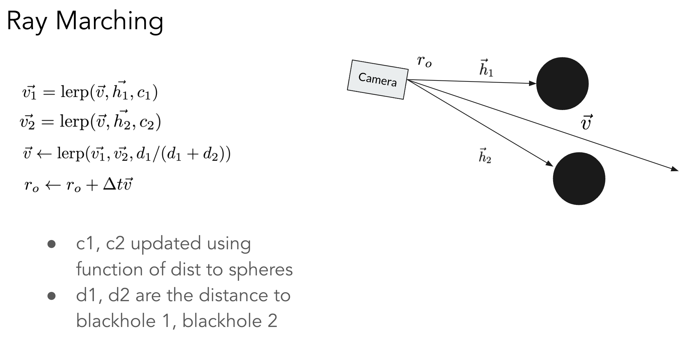

For our final project, we modeled the collision of two black holes in Unity based on the laws of gravity. We simulated how gravitational forces between two masses rotating around each other lead the black holes to get closer over time, eventually colliding and merging into a larger black hole. We also implemented a raymarching algorithm in a custom black hole shader to more realistically simulate how light bends near black holes due to gravitational lensing. We also rendered dust particles that orbit around our black hole and raytraced off these particles to produce a light circle around our black hole.
We built our implementation from scratch, starting with an empty Unity scene. We created two spheres to represent our black holes.
Newton's universal law of gravitation states that the gravitational pull between two particles with masses m1 and m2 who are r distance apart is equal to (G * m1 * m2)/r^2, where G is the gravitational constant. We apply this force to the direction vector between our two black holes as they rotate around each other to represent the force between the masses, simulating how the black holes rotate faster as they get closer to each other over time. The results of our simulation can be seen below:
We developed a custom shader that we applied to our black holes to model the effects of gravitational lensing using raymarching. Gravitational lensing describes how light can bend near black holes instead of traveling in a straight line as they are pulled by the strong gravitational fields surrounding black holes, leading the area around a black hole to look distorted or warped. Thus, raymarching is needed to simulate the curvature of light across spacetime as traditional raytracing algorithms like the one we learned about in class assume that light rays travel in a straight line between surfaces.
While ray tracing creates a ray and computes its intersection with the scene, ray marching simply steps the ray forward into the scene in tiny increments. This is necessary for the nonlinear traversal of rays through the scene.
In our custom shader, we shoot out rays from the camera. During each step, we obtain 3 vectors: (1) the current direction of the ray (v), (2) the vector between the current position and the center of the first black hole (h1), and (3) the vector between the current position and the center of the second black hole (h2). We normalize each vector and scale it by our step size.
Next, we use the distance between the current ray to each of the black holes to compute an approximation for the amount of light that gets bent. Using the distance to the black hole is a useful approximation because it tells us whether the ray falls within the event horizon of the black hole, which informs whether the final color of the pixel is affected by the black hole as rays that fall within the event horizon are unable to escape, which means the final color should be black. We then linearly interpolate between v, h1, and this approximated value, obtaining a new vector v1. Then we perform the same linear interpolation but for h2, obtaining vector v2. To compute the direction of the new ray, we lerp(v1, v2, (dist to black hole 1)/(dist to black hole 1 + dist to black hole 2)), then compute the ray's new position by adding this direction vector to its current position.
Next, we compute how big of an affect the black hole has on the pixel's final color based on how close the ray is to the center of each black hole. The final color is determined by lerping between the color of the SkyBox/background at the ray's position, the color of the black hole, and how big of an affect the black hole has on the final color. Generally, if the ray's final position is within the event horizon of a black hole, that means it gets captured by the black hole, so the final color should be closer to black. Otherwise, the final color should be closer to the SkyBox's color.
In summary, our raymarching approach looks like:
We used Unity's ParticleSystem component to create our dust particles, which emits a user-specified amount of particles. For each particle, we set its starting position to be a random distance away from the center of a black hole circling the black hole starting with an initial tangential velocity.
Over time, we update the particle's velocity based on the gravitational force between it and the center of the black holes.
We used Unity for our project, which no one on our team had much experience with. Thus, our initial challenges came from setting up our development environment and understanding how to write scripts to control different components as we were not familiar with how Unity worked. We tackled this problem by following along with some beginner Unity tutorials to gain more experience with the different features Unity has, such as how to add our own shaders and how to write scripts to control how components act in the world and how they interact with other objects in the world.
Another challenge we encountered was implementing our raymarching algorithm in our custom shader. We had some trouble figuring out the proper physics and math used in raymarching, such as what values we should be lerping between. We tackled this problem by researching and following along with some raymarching tutorials online.
Finally, Unity does not support ray marching/tracing by default, at least in the configuration we were using. To resolve this, we placed a flat object in front of the camera and wrote a shader for the object that implemented our ray marching algorithm. This ended up producing great results!
In our proposal, we discussed wanting to accurately model the physics behind black hole collisions and the bending of light. However, we learned that usually estimations can provide good enough results that still look pretty realistic. For example, in our shader, instead of formulating the exact precise equation to calculate how light bends, we used an approximation based on the distance to the center of the black hole. We found that the warping effect still looks pretty realistic even though we used approximations.
We also learned that, for something as amorphous as a black hole, it's more important to create something that looks visually pleasing than something that is physically accurate. Doing so reduces complexity and leads to a better result.
Another lesson we learned is how to apply what we learned in class to improve our simulation. For example, we learned how to implement a BVH-like optimization in our raymarching algorithm where if a ray did not intersect with the bounding box around the two black holes, we knew we could immediately sample the SkyBox to get the final background color since we knew that ray would not fall within the event horizon of the black holes and be captured by the black hole. Thus, we found it rewarding being able to apply and integrate concepts we learned throughout the semester in our final project to improve upon our renderings.
The following videos show our gravity simulation and collision. The black holes rotate around each other, moving faster as they get closer, then eventually colliding and merging into a larger black hole. We can see how the region around the two black holes looks warped as we account for the effects of gravitational lensing using raymarching. We also notice how the area surrounding the black holes gets warped as they move around each other, showing our raymarching algorithm and custom shader at play as the collision takes place.
"Gravitational Waveforms from Inspiralling Compact Binaries to Second Post-Newtonian Order" by L. Blanchet et al.
"Gravitation" by Charles W. Misner, Kip S. Thorne, and John Archibald Wheeler.
We used the following site to better understand how to implement our raymarching algorithm:https://medium.com/dotcrossdot/raymarching-simulating-a-black-hole-53624a3684d3
Tony Xin: worked on gravity simulation between the black holes, implemented the particle simulation around the black hole
Jeremy Chow: built out the ray marching black hole, optimized the program to run at higher frame rates, implemented an accretion disk
Diana Qing: worked on an alternate implementation of ray marching and compared with Jeremy's implementation
Arjun Patrawala: researched into black hole physics and how to implement ray marching, helped Jeremy implement the black hole ray marching effects